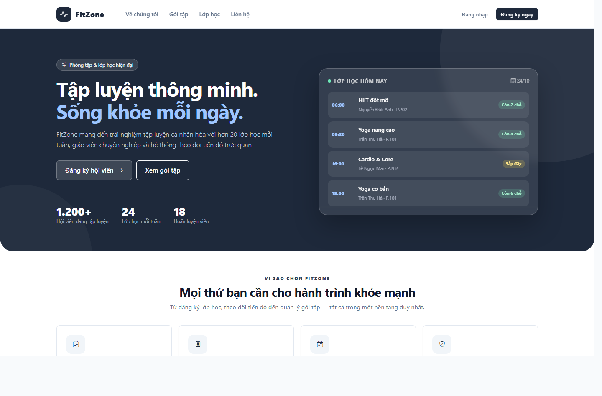
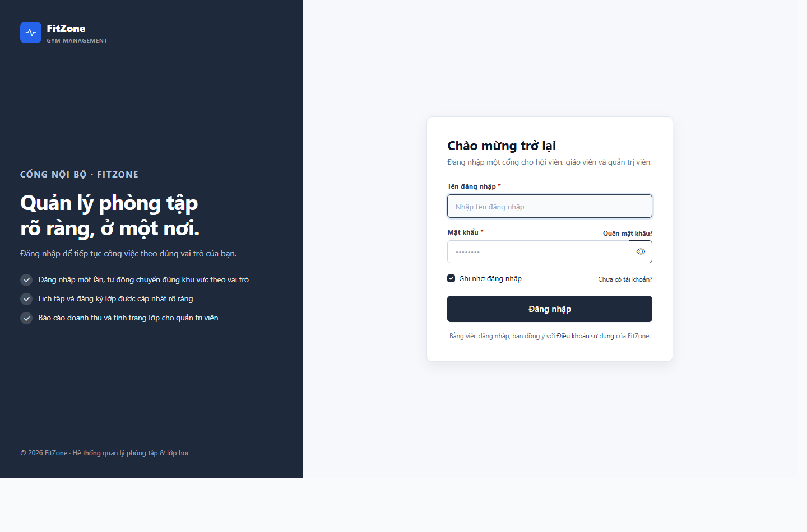
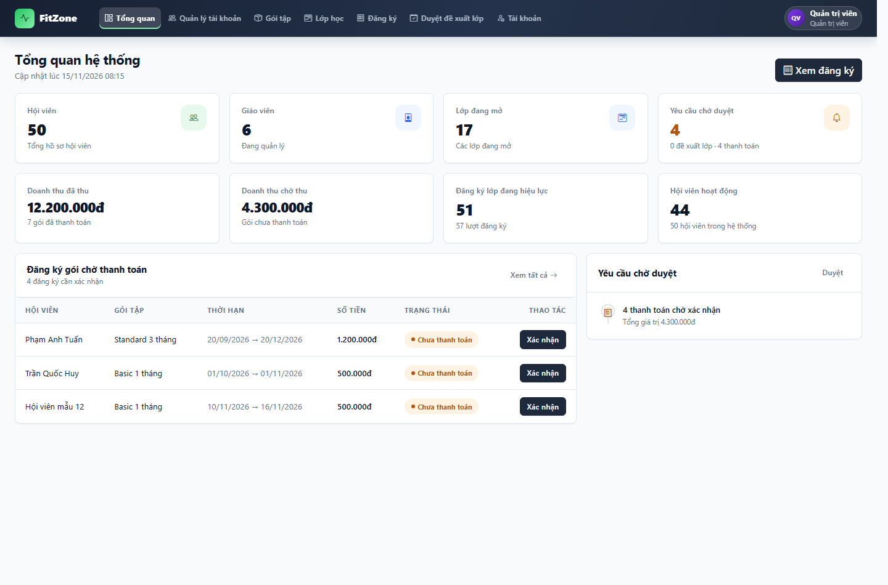
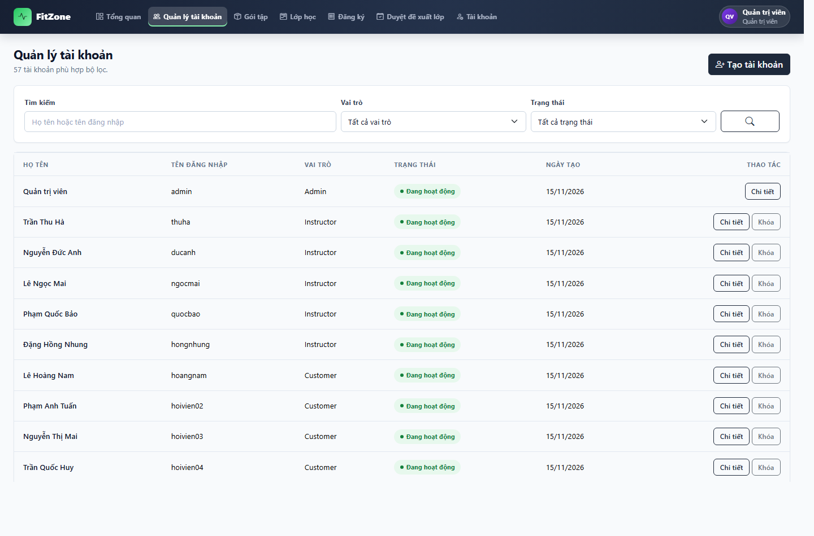
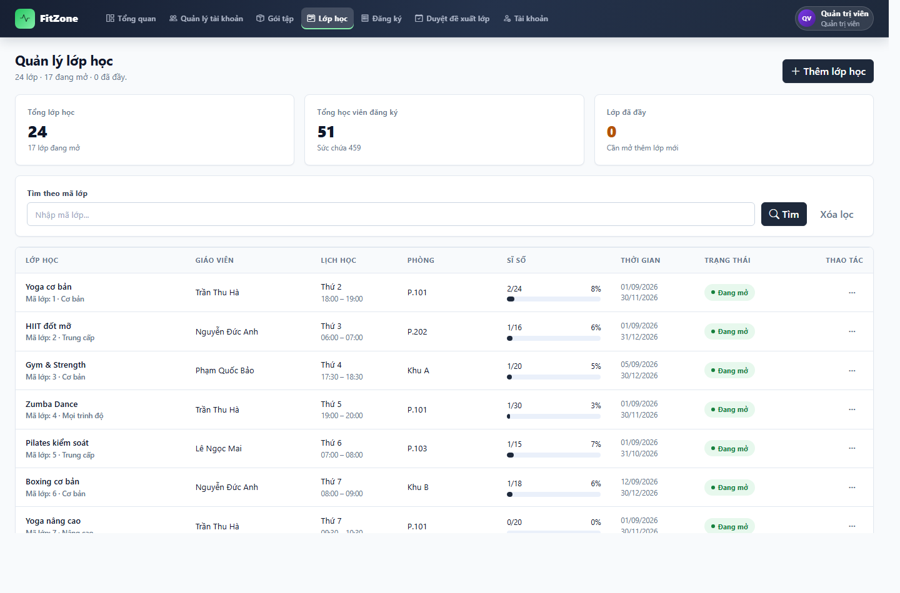
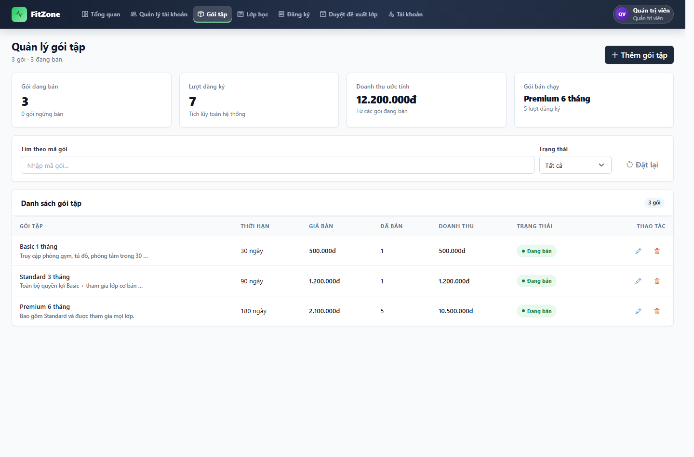
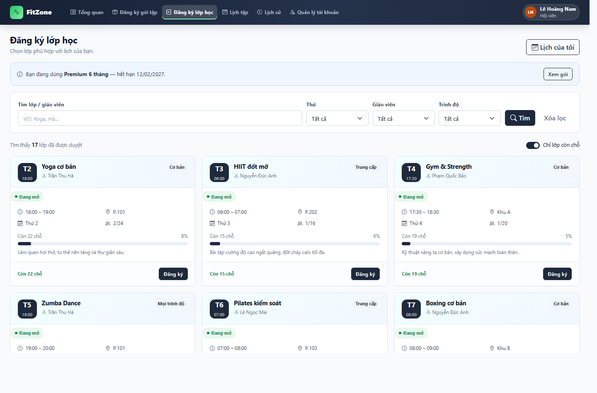
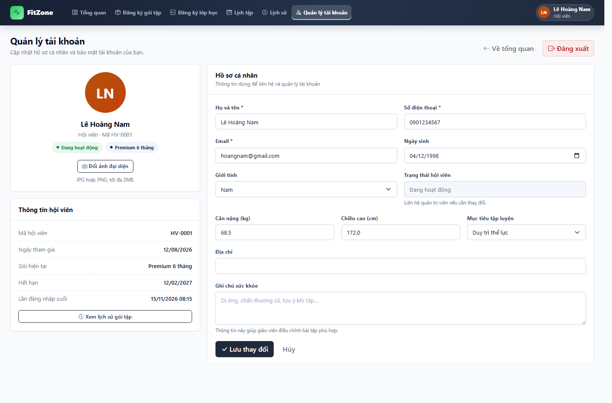
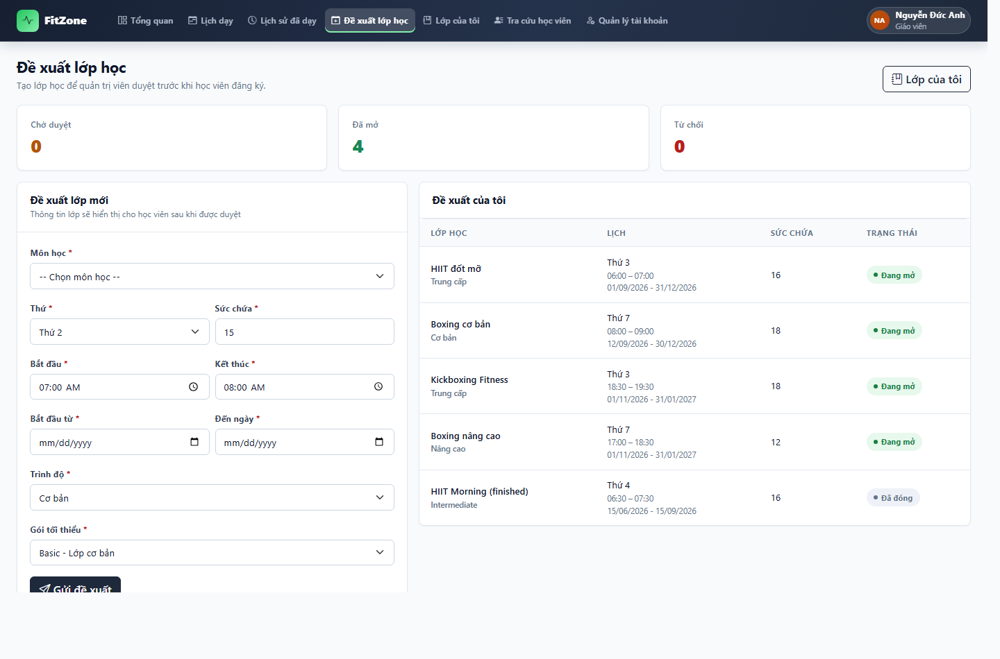

| Giảng viên hướng dẫn | [ĐIỀN HỌ TÊN GIẢNG VIÊN] |
| Nhóm thực hiện | [ĐIỀN NHÓM] — Lớp [ĐIỀN LỚP] |
| Học kỳ / năm học | [ĐIỀN HỌC KỲ] — Năm học [ĐIỀN NĂM HỌC] |
| STT | Họ và tên | MSSV | Vai trò |
|---|---|---|---|
| 1 | [ĐIỀN HỌ TÊN] | [MSSV] | Nhóm trưởng / Kiến trúc & Backend admin |
| 2 | [ĐIỀN HỌ TÊN] | [MSSV] | Backend instructor |
| 3 | [ĐIỀN HỌ TÊN] | [MSSV] | Backend customer |
Mục lục trong bản Word/PDF được tạo tự động từ các tiêu đề cấp 1–3. Danh sách dưới đây giúp tra cứu nhanh cấu trúc báo cáo.
| Chương | Nội dung chính |
|---|---|
| 1 | Giới thiệu: bối cảnh, mục tiêu, phạm vi, tác nhân, công nghệ, thuật ngữ. |
| 2 | Phân công công việc: nguyên tắc, thành viên, ma trận module, họp nhóm. |
| 3 | Mô tả và đặc tả bài toán: hiện trạng, yêu cầu chức năng/phi chức năng, quy tắc nghiệp vụ, use case. |
| 4 | Phân tích hệ thống: kiến trúc, luồng request, sơ đồ chức năng, mô hình dữ liệu, các luồng nghiệp vụ, bảo mật. |
| 5 | Thiết kế hệ thống: thư mục, cơ sở dữ liệu đầy đủ, endpoint, giao diện, trạng thái. |
| 6 | Cài đặt: môi trường, module, mã tiêu biểu, quy ước. |
| 7 | Kết quả và kiểm thử: chức năng theo vai trò, hình ảnh, kịch bản kiểm thử, hạn chế. |
| Phụ lục | A. Cài đặt và xử lý sự cố; B. Tài khoản mẫu; C. Bảng đối chiếu trạng thái. |
[[TOC]]
Các phòng tập gym, yoga và lớp học thể thao quy mô vừa thường quản lý hồ sơ hội viên, gói tập, lịch dạy và đăng ký lớp bằng sổ sách hoặc nhiều tệp Excel rời. Cách làm này dễ phát sinh trùng lặp dữ liệu, khó kiểm soát sức chứa lớp, khó tra cứu lịch sử thanh toán và không bảo đảm phân quyền giữa quản trị viên, giáo viên và hội viên.
Đề tài FitZone — Hệ thống quản lý phòng tập & lớp học được chọn nhằm số hóa các nghiệp vụ cốt lõi: quản lý tài khoản, hồ sơ hội viên, hồ sơ giáo viên, gói tập, lớp học, lịch dạy, đăng ký lớp và theo dõi doanh thu. Hệ thống xây dựng bằng PHP thuần và MySQL, giao diện web server-side kết hợp AJAX cho các thao tác không tải lại trang.
| Tác nhân | Mô tả | Quyền chính |
|---|---|---|
| Khách | Người chưa có tài khoản, truy cập trang công khai. | Xem giới thiệu, gói, lớp nổi bật; đăng ký hội viên; đăng nhập. |
| Hội viên | Khách đã đăng ký tài khoản và có hồ sơ hội viên đang hoạt động. | Đăng ký gói/lớp, xem lịch, lịch sử, cập nhật hồ sơ, đổi mật khẩu. |
| Giáo viên | Người giảng dạy, có hồ sơ giáo viên liên kết tài khoản. | Xem lịch dạy, lớp phụ trách, học viên; đề xuất lớp; tra cứu; cập nhật hồ sơ. |
| Quản trị viên | Người vận hành và quản lý toàn bộ hệ thống. | CRUD dữ liệu, duyệt đề xuất, xác nhận thanh toán, xem thống kê. |
| Thành phần | Công nghệ sử dụng |
|---|---|
| Backend | PHP 8.0.30 thuần, kiến trúc page-based; mysqli, session, password_hash / password_verify. |
| Cơ sở dữ liệu | MySQL/MariaDB 10.4, InnoDB, utf8mb4; 10 bảng, khóa ngoại và chỉ mục duy nhất. |
| Frontend | HTML5, CSS3, JavaScript thuần (Fetch API), Bootstrap 5 và Bootstrap Icons đặt cục bộ. |
| Giao tiếp | Form POST server-side cho đăng nhập/đăng ký; AJAX JSON cho CRUD và thao tác nghiệp vụ. |
| Môi trường chạy | XAMPP trên Windows: Apache 2.4.58, PHP 8.0.30, MySQL/MariaDB; trình duyệt Chrome/Edge. |
| Thuật ngữ | Diễn giải |
|---|---|
| Hội viên | Khách hàng của phòng tập, có tài khoản vai trò customer và hồ sơ trong bảng hoi_vien. |
| Giáo viên | Người dạy lớp, có tài khoản vai trò instructor và hồ sơ trong bảng giao_vien. |
| Gói tập | Sản phẩm có thời hạn, giá và cấp độ basic/standard/premium. |
| Lớp học | Buổi học lặp theo thứ trong tuần, có giáo viên, phòng, sức chứa và khoảng ngày hiệu lực. |
| Đề xuất lớp | Bản ghi lop_hoc do giáo viên tạo, trạng thái cho_duyet, chờ quản trị viên xử lý. |
| Đăng ký gói | Bản ghi dang_ky_goi ghi nhận việc mua gói và trạng thái thanh toán. |
| Đăng ký lớp | Bản ghi dang_ky_lop ghi nhận hội viên tham gia một lớp. |
| Xóa mềm | Đánh dấu deleted_at thay vì xóa vật lý, giữ lại lịch sử. |
| AJAX/JSON | Gọi fetch đến chính trang hiện tại với ?action=... và nhận phản hồi JSON. |
Nhóm gồm 3 sinh viên. Công việc được chia theo module nghiệp vụ thay vì chia theo tệp rời rạc, để mỗi thành viên hiểu trọn vẹn một luồng từ giao diện, xử lý PHP đến truy vấn MySQL. Các phần dùng chung như schema, bootstrap, partials và quy ước mã nguồn được thống nhất ngay từ tuần đầu.
| STT | Họ và tên / MSSV | Vai trò | Phạm vi phụ trách chính | Đóng góp |
|---|---|---|---|---|
| 1 | Bùi Nhựt Duy [MSSV] |
Nhóm trưởng / Kiến trúc & Backend admin | Đề ra cấu trúc dự án và quy ước mã nguồn; thiết kế CSDL, schema, dữ liệu mẫu; xây dựng endpoint admin (tài khoản, gói tập, lớp học, đăng ký, duyệt đề xuất); thiết kế layout web dùng chung (partials, CSS, menu); tích hợp và kiểm thử tổng thể. | 40% |
| 2 | Bạch Thái Nhựt [MSSV] |
Backend instructor | Xây dựng endpoint instructor (lịch dạy, lịch sử, đề xuất lớp, lớp phụ trách, tra cứu học viên, tài khoản); thiết kế giao diện khu vực giáo viên; kiểm thử module giáo viên. | 30% |
| 3 | Duy Thường [MSSV] |
Backend customer | Xây dựng endpoint customer (đăng ký gói, đăng ký lớp, lịch tập, lịch sử, tài khoản); thiết kế giao diện khu vực hội viên; kiểm thử module hội viên. | 30% |
| Module | Phụ trách chính | Phối hợp | Sản phẩm bàn giao |
|---|---|---|---|
| Kiến trúc dự án, cấu trúc thư mục, quy ước mã nguồn | Bùi Nhựt Duy | Bạch Thái Nhựt, Duy Thường | bootstrap.php, functions.php, data/data.php, README. |
| Thiết kế CSDL, schema, khóa ngoại, dữ liệu mẫu | Bùi Nhựt Duy | Cả nhóm | File SQL và kết nối MySQL. |
| Layout web, partials, CSS, menu theo vai trò | Bùi Nhựt Duy | Cả nhóm | partials/, menus/, tokens.css, app.css, pages.css. |
| Đăng nhập, đăng ký, đăng xuất, session, phân quyền | Bùi Nhựt Duy | Cả nhóm | login.php, register.php, common/logout.php, require_role(). |
| Endpoint admin: tài khoản, gói tập, lớp học, đăng ký, duyệt đề xuất | Bùi Nhựt Duy | Bạch Thái Nhựt, Duy Thường | admin/*.php, admin/queries.php. |
| Giao diện admin: dashboard, bảng dữ liệu, form, modal, AJAX | Bùi Nhựt Duy | Duy Thường (review UI) | admin/*.php, js/admin/*. |
| Endpoint instructor: lịch dạy, lịch sử, đề xuất lớp, lớp, tra cứu, tài khoản | Bạch Thái Nhựt | Bùi Nhựt Duy | instructor/*.php. |
| Giao diện instructor: lịch tháng, form đề xuất, danh sách lớp/học viên | Bạch Thái Nhựt | Duy Thường (review UI) | instructor/*.php, js/instructor/*. |
| Endpoint customer: đăng ký gói, đăng ký lớp, lịch, lịch sử, tài khoản | Duy Thường | Bùi Nhựt Duy | customer/*.php. |
| Giao diện customer: đăng ký, lịch tập, lịch sử, hồ sơ | Duy Thường | Bạch Thái Nhựt (review UI) | customer/*.php, js/customer/*. |
| Kiểm thử, tích hợp, sửa lỗi, chuẩn bị demo | Cả nhóm (Bùi Nhựt Duy chủ trì) | Cả nhóm | Ma trận kiểm thử, checklist demo. |
| Tài liệu, báo cáo, ảnh chụp, hướng dẫn cài đặt | Cả nhóm (Bùi Nhựt Duy tổng hợp) | Cả nhóm | README, báo cáo Word/PDF, ảnh demo. |
Nhóm duy trì trao đổi thường xuyên qua nhóm chat và tổ chức các buổi họp trực tiếp để thống nhất hướng làm, tránh lệch giữa các module. Các nội dung quan trọng đều được cả nhóm thống nhất trước khi triển khai.
| Buổi | Nội dung chính | Kết quả |
|---|---|---|
| 1 | Khởi động, chọn đề tài FitZone, xác định phạm vi và chức năng cơ bản. | Chốt đề tài, chia 3 thành viên theo module admin - instructor - customer. |
| 2 | Thảo luận kiến trúc, thiết kế CSDL và quy ước mã nguồn. | Chốt 10 bảng, cấu trúc thư mục, layout dùng chung và cách đặt tên hàm. |
| 3 | Rà soát endpoint từng vai trò, thống nhất AJAX/JSON và tiến độ. | Chốt danh sách endpoint, mẫu phản hồi JSON và mốc hoàn thành từng module. |
| 4 | Kiểm thử tổng thể, sửa lỗi và chuẩn bị demo. | Chốt kịch bản demo, dữ liệu mẫu, nội dung báo cáo và phân công thuyết trình. |
Phòng tập hiện quản lý hồ sơ hội viên, gói tập và lịch dạy trên nhiều bảng tính riêng. Khi hội viên đăng ký lớp, nhân viên phải kiểm tra thủ công gói tập còn hạn hay không, lớp còn chỗ hay không, cấp độ gói có phù hợp không và hội viên đã đăng ký trước đó chưa. Việc này tốn thời gian, dễ sai sót và không có lịch sử thao tác rõ ràng.
Hệ thống FitZone tập trung dữ liệu vào một CSDL duy nhất, tự động kiểm tra các điều kiện nghiệp vụ và phân quyền theo vai trò. Quản trị viên theo dõi doanh thu và yêu cầu chờ xử lý; giáo viên chủ động đề xuất lớp; hội viên tự đăng ký gói, đăng ký lớp và xem lịch cá nhân.
| STT | Nhóm chức năng | Yêu cầu chi tiết | Vai trò |
|---|---|---|---|
| 1 | Trang công khai | Hiển thị giới thiệu, gói tập đang bán, lớp nổi bật; liên kết đăng nhập/đăng ký. | Khách |
| 2 | Đăng ký hội viên | Nhập tên đăng nhập, mật khẩu, họ tên, số điện thoại, email, ngày sinh, giới tính, địa chỉ; kiểm tra trùng và tạo tài khoản + hồ sơ trong một transaction. | Khách |
| 3 | Đăng nhập / đăng xuất | Xác thực bằng mật khẩu băm, chặn tài khoản khóa, điều hướng theo vai trò; đăng xuất hủy phiên. | Mọi vai trò |
| 4 | Quản lý tài khoản | Xem danh sách, lọc theo vai trò/trạng thái/từ khóa, phân trang, tạo tài khoản kèm hồ sơ, xem chi tiết, cập nhật hồ sơ, khóa/mở khóa. | Quản trị viên |
| 5 | Quản lý gói tập | CRUD gói, thời hạn, giá, cấp độ, trạng thái bán; xóa mềm; thống kê lượt bán và doanh thu ước tính. | Quản trị viên |
| 6 | Quản lý lớp học | CRUD lớp, giáo viên, thứ, giờ, khoảng ngày, phòng, sức chứa, trình độ, gói tối thiểu, trạng thái; xóa mềm. | Quản trị viên |
| 7 | Xem chi tiết lớp | Xem thông tin lớp và danh sách học viên đang đăng ký kèm điện thoại, email, ngày đăng ký, trạng thái. | Quản trị viên, giáo viên |
| 8 | Quản lý đăng ký gói | Tạo đăng ký thay hội viên, xác nhận thanh toán, hủy đăng ký; lọc theo mã đăng ký; thống kê chờ thu/đã thu. | Quản trị viên |
| 9 | Đăng ký gói | Hội viên gửi yêu cầu mua gói; hệ thống tính ngày bắt đầu/kết thúc theo thời hạn gói; chặn gửi trùng khi còn chờ thanh toán. | Hội viên |
| 10 | Đăng ký lớp | Kiểm tra hồ sơ hoạt động, gói còn hạn, cấp độ gói, sức chứa, trùng lớp, trùng khung giờ; tạo đăng ký. | Hội viên |
| 11 | Hủy đăng ký lớp | Hội viên chỉ được hủy đăng ký của chính mình và chỉ khi còn trạng thái dang_ky. | Hội viên |
| 12 | Đề xuất lớp | Giáo viên chọn môn thuộc chuyên môn, thứ, giờ, khoảng ngày, sức chứa, trình độ, gói tối thiểu; lưu trạng thái cho_duyet. | Giáo viên |
| 13 | Duyệt đề xuất | Quản trị viên duyệt (bắt buộc nhập phòng, chọn gói tối thiểu) hoặc từ chối đề xuất đang chờ. | Quản trị viên |
| 14 | Lịch và lịch sử | Hội viên xem lịch tập tháng, lịch sử gói/lớp; giáo viên xem lịch dạy tháng và lịch sử lớp đã kết thúc. | Hội viên, giáo viên |
| 15 | Tra cứu học viên | Giáo viên tìm theo tên/số điện thoại, lọc theo lớp mình dạy và trạng thái hội viên. | Giáo viên |
| 16 | Cập nhật hồ sơ | Hội viên sửa thông tin cá nhân, chỉ số cơ thể, mục tiêu, địa chỉ, ghi chú; giáo viên sửa liên hệ, giới thiệu, chuyên môn; admin sửa họ tên. | Hội viên, giáo viên, quản trị viên |
| 17 | Đổi mật khẩu | Kiểm tra mật khẩu hiện tại, độ dài tối thiểu 6 và xác nhận khớp trước khi cập nhật hash mới. | Mọi vai trò |
| 18 | Thống kê | Tổng hợp hội viên, giáo viên, lớp đang mở, doanh thu đã thu/chờ thu, đăng ký lớp hiệu lực, yêu cầu chờ duyệt. | Quản trị viên |
| Tiêu chí | Yêu cầu |
|---|---|
| Hiệu năng | Trang danh sách phản hồi dưới 2 giây với dữ liệu mẫu vài trăm bản ghi; truy vấn có chỉ mục trên khóa chính, khóa ngoại, email và tên đăng nhập. |
| An toàn | Không nối chuỗi dữ liệu người dùng vào SQL; dùng prepared statements, băm mật khẩu, escape HTML khi hiển thị, kiểm tra vai trò ở cả trang và endpoint. |
| Phiên làm việc | Cookie session HttpOnly, SameSite=Lax; tái tạo session sau đăng nhập; hủy session khi đăng xuất; tài khoản bị khóa bị đẩy ra ngoài. |
| Khả dụng | Giao diện responsive, menu theo vai trò, thông báo lỗi rõ ràng, thao tác nguy hiểm có xác nhận. |
| Bảo trì | Tách cấu hình, dữ liệu, giao diện và xử lý; đặt tên hàm theo quy ước; không viết SQL trong view; SQL ghi tập trung ở admin/queries.php hoặc ngay tại trang tương ứng. |
| Tương thích | Chạy trên Chrome, Edge, Firefox bản mới; màn hình từ 1280px trở lên, có điều chỉnh cho tablet. |
| Dữ liệu | UTF-8/utf8mb4 cho tiếng Việt; thời gian lưu DATETIME; tiền lưu BIGINT (đơn vị đồng). |
| STT | Quy tắc | Diễn giải |
|---|---|---|
| 1 | Một tài khoản - một hồ sơ | Mỗi tài khoản hội viên hoặc giáo viên liên kết tối đa một hồ sơ tương ứng. Giáo viên có ràng buộc UNIQUE trên tai_khoan_id; hội viên được kiểm soát bằng truy vấn. |
| 2 | Tài khoản hoạt động | Chỉ tài khoản trang_thai = 1 mới đăng nhập được; giáo viên còn phải có hồ sơ dang_lam và chưa xóa mềm. |
| 3 | Gói còn hạn | Hội viên chỉ được đăng ký lớp khi có đăng ký gói da_thanh_toan và ngày hiện tại nằm trong khoảng bắt đầu - kết thúc. |
| 4 | Cấp độ gói tối thiểu | Lớp yêu cầu basic/standard/premium; cấp độ gói của hội viên phải bằng hoặc cao hơn. |
| 5 | Sức chứa lớp | Không cho đăng ký khi số đăng ký dang_ky đã đạt suc_chua. |
| 6 | Không trùng đăng ký lớp | Một hội viên chỉ có một đăng ký còn hiệu lực cho mỗi lớp; CSDL có UNIQUE (hoi_vien_id, lop_hoc_id). |
| 7 | Không trùng khung giờ | Một hội viên không thể có hai lớp đang đăng ký trùng thứ, giao nhau về giờ và giao nhau về khoảng ngày. |
| 8 | Trạng thái lớp | Đề xuất của giáo viên bắt đầu ở cho_duyet; chỉ lớp dang_mo, chưa xóa và chưa hết ngày kết thúc mới nhận đăng ký. |
| 9 | Chuyên môn giáo viên | Tên lớp đề xuất phải trùng tên một chuyên môn đang hoạt động của giáo viên. |
| 10 | Xóa mềm | Gói, lớp, hội viên, giáo viên dùng deleted_at để giữ lịch sử thay vì xóa vật lý. |
| 11 | Khóa tài khoản | Không cho quản trị viên khóa tài khoản admin khác hoặc tự khóa chính mình thông qua chức năng cập nhật. |
| 12 | Trạng thái thanh toán | Đăng ký gói mới ở chua_thanh_toan; chỉ chuyển da_thanh_toan khi admin xác nhận; có thể chuyển da_huy. |
| 13 | Hủy đúng chủ sở hữu | Hội viên chỉ hủy được đăng ký lớp gắn với tài khoản của mình; kiểm tra quyền sở hữu trước khi cập nhật. |
| 14 | Thời gian hợp lệ | Giờ kết thúc phải sau giờ bắt đầu; ngày kết thúc phải sau hoặc bằng ngày bắt đầu; thứ trong tuần từ 1 đến 7. |
| Mã | Use case | Tác nhân | Mô tả ngắn |
|---|---|---|---|
| UC01 | Đăng nhập | Khách, mọi vai trò | Xác thực tài khoản và chuyển về đúng khu vực. |
| UC02 | Đăng ký hội viên | Khách | Tạo tài khoản và hồ sơ hội viên mới. |
| UC03 | Đăng xuất | Mọi vai trò | Hủy phiên và quay về trang đăng nhập. |
| UC04 | Quản lý tài khoản | Quản trị viên | Xem, lọc, tạo, sửa, khóa/mở khóa tài khoản và hồ sơ liên kết. |
| UC05 | Quản lý gói tập | Quản trị viên | Thêm, sửa, xóa mềm gói tập và trạng thái bán. |
| UC06 | Quản lý lớp học | Quản trị viên | Thêm, sửa, xóa mềm lớp; phân công giáo viên. |
| UC07 | Xem chi tiết lớp | Quản trị viên, giáo viên | Xem thông tin lớp và danh sách học viên. |
| UC08 | Đăng ký gói | Hội viên | Gửi yêu cầu mua gói và chờ xác nhận thanh toán. |
| UC09 | Quản lý đăng ký gói | Quản trị viên | Tạo hộ, xác nhận thanh toán hoặc hủy đăng ký gói. |
| UC10 | Đăng ký lớp | Hội viên | Chọn lớp còn chỗ, đúng gói và không trùng lịch. |
| UC11 | Hủy đăng ký lớp | Hội viên | Hủy đăng ký còn hiệu lực của chính mình. |
| UC12 | Đề xuất lớp | Giáo viên | Gửi thông tin lớp đề xuất cho quản trị viên. |
| UC13 | Duyệt đề xuất | Quản trị viên | Duyệt hoặc từ chối đề xuất lịch dạy. |
| UC14 | Xem lịch | Hội viên, giáo viên | Xem lịch tập/lịch dạy theo tháng. |
| UC15 | Xem lịch sử | Hội viên, giáo viên | Xem lịch sử gói/lớp hoặc lớp đã kết thúc. |
| UC16 | Tra cứu học viên | Giáo viên | Tìm học viên trong các lớp mình phụ trách. |
| UC17 | Cập nhật hồ sơ | Hội viên, giáo viên, quản trị viên | Sửa thông tin cá nhân, chỉ số cơ thể, chuyên môn. |
| UC18 | Đổi mật khẩu | Mọi vai trò | Kiểm tra mật khẩu cũ và cập nhật mật khẩu mới. |
| UC19 | Xem thống kê | Quản trị viên | Xem số liệu hội viên, lớp, doanh thu, yêu cầu chờ. |
| UC20 | Xem tổng quan | Hội viên, giáo viên | Xem thông tin nhanh theo vai trò sau khi đăng nhập. |
Hệ thống dùng kiến trúc page-based: mỗi tệp PHP vừa là controller vừa là view. Mã dùng chung được nạp qua common/bootstrap.php; truy vấn đọc gom vào common/data/; truy vấn ghi của admin gom vào admin/queries.php, một số trang khác ghi trực tiếp bằng prepared statement. Giao diện ghép từ các partial. Cách tổ chức này phù hợp với phạm vi môn học, giảm số lớp trừu tượng nhưng vẫn tách được trách nhiệm chính.
TRÌNH DUYỆT │ HTTP request / fetch(AJAX) ▼ APACHE + PHP 8 │ ├── index.php, login.php, register.php ├── admin/*.php, instructor/*.php, customer/*.php │ │ │ ├── common/bootstrap.php (session, hàm dùng chung, DB) │ ├── common/functions.php (url, redirect, e, json_response) │ ├── common/data/*.php (hàm đọc dữ liệu cho view) │ ├── common/components/ui.php (sinh HTML: icon, badge, money,...) │ ├── common/partials/*.php (head, sidebar, topbar, flash, foot) │ └── admin/queries.php (truy vấn ghi của admin) ▼ MySQL (phongtap) ── 10 bảng InnoDB │ ▼ HTML + CSS + JS → trình duyệt
Luồng đồng bộ trả về HTML đầy đủ cho lần tải trang đầu. Các thao tác như lưu lớp, xóa gói, đăng ký lớp, đổi trạng thái tài khoản gửi AJAX đến chính trang hiện tại với tham số ?action=... và nhận JSON, sau đó JavaScript cập nhật giao diện hoặc tải lại trang.
bootstrap.php để mở session, nạp hàm dùng chung, UI helper và data layer.common_user() đọc tai_khoan_id từ session, truy vấn tài khoản; tài khoản bị khóa hoặc giáo viên không còn hồ sơ hợp lệ sẽ bị đăng xuất.require_role() chặn truy cập sai vai trò và chuyển hướng về khu vực phù hợp.data_*(), ghép partial và trả HTML.
FITZONE
├── Công khai
│ ├── Trang chủ, giới thiệu, gói và lớp nổi bật
│ ├── Đăng ký hội viên
│ └── Đăng nhập / Đăng xuất
├── Hội viên
│ ├── Tổng quan hồ sơ, chỉ số cơ thể, lớp đã đăng ký
│ ├── Đăng ký gói tập
│ ├── Đăng ký lớp học
│ ├── Lịch tập theo tháng
│ ├── Lịch sử gói và lịch sử lớp (hủy đăng ký)
│ └── Cập nhật hồ sơ, đổi mật khẩu
├── Giáo viên
│ ├── Tổng quan lớp, học viên, đề xuất
│ ├── Lịch dạy theo tháng
│ ├── Lịch sử lớp đã kết thúc
│ ├── Đề xuất lớp học
│ ├── Lớp đang dạy và danh sách học viên
│ ├── Tra cứu học viên
│ └── Cập nhật hồ sơ, chuyên môn, đổi mật khẩu
└── Quản trị viên
├── Tổng quan và thống kê doanh thu
├── Quản lý tài khoản (tạo, sửa, khóa/mở, chi tiết)
├── Quản lý gói tập
├── Quản lý lớp học và xem chi tiết lớp
├── Quản lý đăng ký gói
├── Duyệt / từ chối đề xuất lớp
└── Cập nhật tài khoản quản trị
CSDL gồm 10 bảng, quan hệ chính được mô tả như sau:
tai_khoan 1───0..1 giao_vien 1───* giao_vien_chuyen_mon *───1 chuyen_mon
│ │
│ └──1───* lop_hoc 1───* dang_ky_lop *───1 hoi_vien
│ │
└───0..1 hoi_vien 1───* dang_ky_goi *───1 goi_tap │
│ │
└───* tai_khoan (nhân viên xác nhận) │
│
doanh_thu (tháng, năm, số tiền) ── bảng tổng hợp độc lập ┘
Quan hệ chính: một tài khoản có thể liên kết với một hồ sơ giáo viên hoặc hội viên; một giáo viên dạy nhiều lớp; một lớp có nhiều đăng ký; một hội viên có nhiều đăng ký gói và đăng ký lớp. Bảng doanh_thu lưu số liệu tổng hợp theo tháng phục vụ thống kê. Không có bảng lịch rảnh riêng: đề xuất lịch dạy được lưu trực tiếp trong lop_hoc với trạng thái cho_duyet.
connect_mysql.php đọc cấu hình và kết nối trực tiếp tới database phongtap.common/mysql/fitzone_phongtap.sql để import thủ công.register.php, nhập tên đăng nhập, mật khẩu, xác nhận mật khẩu, họ tên, số điện thoại, email, ngày sinh, giới tính, địa chỉ và đồng ý điều khoản.tai_khoan và trùng email trong hoi_vien.customer rồi chèn hồ sơ hoi_vien liên kết tai_khoan_id.login.php.password_verify(); kiểm tra vai trò thuộc admin/instructor/customer.tai_khoan_id và chuyển hướng theo vai trò.common_user() kiểm tra lại tài khoản mỗi request; giáo viên phải còn hồ sơ dang_lam chưa xóa.common/logout.php hủy session.admin/accounts.php; hệ thống đọc danh sách tài khoản, lọc theo vai trò, trạng thái, từ khóa và phân trang 10 dòng/trang.admin_account_create() mở transaction, tạo tai_khoan, sau đó tạo hồ sơ giao_vien hoặc hoi_vien tương ứng; admin thuần không tạo hồ sơ.?action=detail&id=... trả JSON gồm thông tin tài khoản, hồ sơ, chuyên môn; modal hiển thị trường theo vai trò.tai_khoan, hồ sơ hội viên/giáo viên và đồng bộ chuyên môn giáo viên.tai_khoan.trang_thai; câu lệnh loại trừ vai trò admin nên không thể khóa tài khoản admin qua chức năng này.admin_package_save() chèn mới hoặc cập nhật gói; khi sửa phải kiểm tra gói chưa bị xóa mềm.deleted_at = NOW(); gói biến mất khỏi danh sách nhưng lịch sử đăng ký vẫn giữ.dang_ban và chưa xóa khi đăng ký.admin_class_save() chèn mới hoặc cập nhật lớp; xóa là xóa mềm qua deleted_at.?action=members&id=... trả JSON gồm thông tin lớp và danh sách học viên đang dang_ky.dang_ky_lop.customer/package-registration.php, chọn gói đang bán và gửi AJAX POST kèm goi_tap_id.hoat_dong gắn với tài khoản; kiểm tra gói tồn tại, đang bán, chưa xóa.chua_thanh_toan cho cùng gói.dang_ky_goi trạng thái chua_thanh_toan, trả JSON thành công và chuyển sang lịch sử.admin/registrations.php, xác nhận thanh toán (chuyển da_thanh_toan, ghi phương thức tien_mat và thời điểm) hoặc hủy (chuyển da_huy).dang_mo, đánh dấu lớp sắp mở nếu ngày bắt đầu lớn hơn hôm nay và tính số chỗ còn lại.?action=register kèm lop_hoc_id.da_thanh_toan còn hiệu lực tại ngày hiện tại; nếu không có, trả 422 yêu cầu mua gói.dang_mo, chưa xóa và chưa qua ngày kết thúc.goi_tap_toi_thieu; gói thấp hơn bị từ chối.dang_ky, so với suc_chua; kiểm tra hội viên đã đăng ký lớp này chưa.dang_ky_lop trạng thái dang_ky; trả JSON thành công.dang_ky.tai_khoan_id.da_huy với điều kiện trạng thái hiện tại là dang_ky; nếu không đổi được dòng nào, trả 422.instructor/availability.php; hệ thống chỉ hiển thị các chuyên môn đang hoạt động của giáo viên.trang_thai = cho_duyet, phòng và mô tả để trống.cho_duyet; khi duyệt phải nhập phòng học và chọn gói tối thiểu, lớp chuyển dang_mo.tu_choi và không hiển thị cho hội viên đăng ký.dang_mo mình phụ trách, kèm sĩ số.tai_khoan.ho_ten và hoi_vien.giao_vien_chuyen_mon.password_verify(), mật khẩu mới tối thiểu 6 ký tự, xác nhận khớp; lưu hash mới bằng password_hash().dang_ky_goi; hiển thị danh sách đăng ký gói chờ thanh toán và đề xuất lớp chờ duyệt.app_notifications() sinh thông báo nhanh từ CSDL cho admin, giáo viên và hội viên (số đề xuất chờ, số gói chưa thanh toán, hội viên mới nhất, số gói đang mở bán).| Nhóm biện pháp | Triển khai trong dự án |
|---|---|
| Xác thực | Mật khẩu băm bằng password_hash(), kiểm tra bằng password_verify(); không lưu mật khẩu thô. |
| Phiên | Cookie HttpOnly, SameSite=Lax; session_regenerate_id(true) sau đăng nhập; đăng xuất hủy session. |
| Phân quyền | require_role() cho trang; kiểm tra vai trò trong từng endpoint POST/GET nhạy cảm; chuyển hướng hoặc trả 403 khi sai quyền. |
| SQL Injection | Toàn bộ truy vấn có dữ liệu người dùng dùng prepare() và bind_param(); không nối chuỗi đầu vào. |
| XSS | Mọi dữ liệu hiển thị đi qua e() (htmlspecialchars) trước khi chèn vào HTML; JSON dùng cờ Unicode và escape khi cần. |
| Kiểm tra dữ liệu | Kiểm tra độ dài, định dạng email, số điện thoại, ngày, số, khoảng giá trị và danh sách trạng thái hợp lệ ở phía máy chủ. |
| Lỗi hệ thống | Bắt mysqli_sql_exception, trả JSON/thông báo thân thiện; không hiển thị câu SQL cho người dùng cuối. |
| Toàn vẹn dữ liệu | Transaction khi tạo tài khoản kèm hồ sơ, unique key cho tên đăng nhập/email/đăng ký lớp, khóa ngoại cho quan hệ chính. |
| Giới hạn hiện tại | Chưa có CSRF token, rate limit đăng nhập, audit log và chính sách mật khẩu nâng cao. |
fitness/ ├── index.php, login.php, register.php # trang công khai ├── admin/ # 7 tệp chức năng + queries.php │ ├── index.php, accounts.php, account.php │ ├── packages.php, classes.php │ ├── registrations.php, availability.php │ └── queries.php # truy vấn ghi dùng chung ├── instructor/ # 7 tệp giáo viên │ ├── index.php, schedule.php, history.php │ ├── availability.php, classes.php │ └── search.php, account.php ├── customer/ # 6 tệp hội viên │ ├── index.php, package-registration.php │ ├── class-registration.php, schedule.php │ └── history.php, account.php ├── common/ │ ├── bootstrap.php, functions.php, logout.php, index.php │ ├── components/ui.php │ ├── data/ # common, shared, admin, customer, instructor, user │ ├── menus/ # admin, instructor, customer │ ├── partials/ # head, sidebar, topbar, flash, foot │ ├── mysql/ # config, connect, schema, seed_data, setup, file SQL │ └── assets/ # css, js, vendor └── docs/ # báo cáo, ảnh chụp, tài liệu
| Bảng | Mục đích | Khóa / quan hệ chính |
|---|---|---|
tai_khoan | Tài khoản đăng nhập và vai trò. | PK id; UNIQUE ten_dang_nhap. |
giao_vien | Hồ sơ giáo viên, liên hệ, giới thiệu, trạng thái làm việc. | FK tai_khoan_id (UNIQUE); UNIQUE email; xóa mềm. |
chuyen_mon | Danh mục chuyên môn (Yoga, Pilates, HIIT, Boxing, ...). | UNIQUE ten_chuyen_mon. |
giao_vien_chuyen_mon | Quan hệ nhiều-nhiều giáo viên - chuyên môn. | PK ghép; FK đến hai bảng, ON DELETE CASCADE. |
hoi_vien | Hồ sơ hội viên, chỉ số cơ thể, mục tiêu, ghi chú. | FK tai_khoan_id; UNIQUE email; xóa mềm. |
goi_tap | Gói tập, thời hạn, giá, cấp độ, trạng thái bán. | PK id; xóa mềm deleted_at. |
lop_hoc | Lớp học, lịch lặp, phòng, sức chứa, gói tối thiểu, trạng thái. | FK giao_vien_id; xóa mềm. |
dang_ky_goi | Đăng ký gói và thanh toán. | FK hội viên, gói, nhân viên xác nhận. |
dang_ky_lop | Đăng ký lớp của hội viên. | UNIQUE (hoi_vien_id, lop_hoc_id); FK lớp, hội viên. |
doanh_thu | Số liệu doanh thu tổng hợp theo tháng/năm. | UNIQUE (thang, nam). |
Bảng tai_khoan — tài khoản đăng nhập
| Cột | Kiểu dữ liệu | Ràng buộc / ghi chú |
|---|---|---|
id | INT UNSIGNED | PK, AUTO_INCREMENT. |
ten_dang_nhap | VARCHAR(50) | NOT NULL, UNIQUE. |
mat_khau | VARCHAR(255) | NOT NULL, lưu hash từ password_hash(). |
ho_ten | VARCHAR(100) | NOT NULL. |
vai_tro | VARCHAR(20) | NOT NULL, mặc định customer; nhận admin, instructor, customer. |
trang_thai | TINYINT(1) | NOT NULL, mặc định 1; 1 hoạt động, 0 bị khóa. |
created_at | DATETIME | NOT NULL, mặc định thời điểm tạo. |
Bảng giao_vien — hồ sơ giáo viên
| Cột | Kiểu dữ liệu | Ràng buộc / ghi chú |
|---|---|---|
id | INT UNSIGNED | PK, AUTO_INCREMENT. |
tai_khoan_id | INT UNSIGNED | NULL, UNIQUE; FK đến tai_khoan(id) ON DELETE SET NULL. |
ho_ten | VARCHAR(100) | NOT NULL. |
sdt | VARCHAR(15) | NOT NULL. |
email | VARCHAR(100) | NOT NULL, UNIQUE. |
gioi_thieu | TEXT | NULL, mô tả kinh nghiệm. |
trang_thai | VARCHAR(20) | NOT NULL, mặc định dang_lam; dùng dang_lam / nghi. |
deleted_at | DATETIME | NULL, xóa mềm. |
created_at | DATETIME | NOT NULL, mặc định thời điểm tạo. |
updated_at | DATETIME | NOT NULL, tự cập nhật khi sửa. |
Bảng chuyen_mon — danh mục chuyên môn
| Cột | Kiểu dữ liệu | Ràng buộc / ghi chú |
|---|---|---|
id | INT UNSIGNED | PK, AUTO_INCREMENT. |
ten_chuyen_mon | VARCHAR(100) | NOT NULL, UNIQUE. |
trang_thai | TINYINT(1) | NOT NULL, mặc định 1; 1 đang dùng, 0 ngừng dùng. |
Bảng giao_vien_chuyen_mon — quan hệ giáo viên - chuyên môn
| Cột | Kiểu dữ liệu | Ràng buộc / ghi chú |
|---|---|---|
giao_vien_id | INT UNSIGNED | PK ghép; FK đến giao_vien(id) ON DELETE CASCADE. |
chuyen_mon_id | INT UNSIGNED | PK ghép; FK đến chuyen_mon(id) ON DELETE CASCADE. |
Bảng hoi_vien — hồ sơ hội viên
| Cột | Kiểu dữ liệu | Ràng buộc / ghi chú |
|---|---|---|
id | INT UNSIGNED | PK, AUTO_INCREMENT. |
tai_khoan_id | INT UNSIGNED | NULL; FK đến tai_khoan(id) ON DELETE SET NULL; có chỉ mục. |
ho_ten | VARCHAR(100) | NOT NULL. |
sdt | VARCHAR(15) | NOT NULL. |
email | VARCHAR(100) | NOT NULL, UNIQUE. |
gioi_tinh | VARCHAR(10) | NULL; nam, nu, khac. |
ngay_sinh | DATE | NULL. |
dia_chi | VARCHAR(255) | NULL. |
ghi_chu | TEXT | NULL, ghi chú sức khỏe. |
chieu_cao | DECIMAL(5,1) | NULL, đơn vị cm; ứng dụng kiểm tra 50–250. |
can_nang | DECIMAL(5,1) | NULL, đơn vị kg; ứng dụng kiểm tra 1–500. |
muc_tieu | VARCHAR(100) | NULL, mục tiêu tập luyện. |
trang_thai | VARCHAR(20) | NOT NULL, mặc định hoat_dong; dùng hoat_dong / ngung_hoat_dong. |
deleted_at | DATETIME | NULL, xóa mềm. |
created_at | DATETIME | NOT NULL, mặc định thời điểm tạo. |
updated_at | DATETIME | NOT NULL, tự cập nhật khi sửa. |
Bảng goi_tap — gói tập
| Cột | Kiểu dữ liệu | Ràng buộc / ghi chú |
|---|---|---|
id | INT UNSIGNED | PK, AUTO_INCREMENT. |
ten_goi | VARCHAR(100) | NOT NULL. |
thoi_han_ngay | INT | NOT NULL, ứng dụng kiểm tra ≥ 1. |
gia | BIGINT | NOT NULL, đơn vị đồng; ứng dụng kiểm tra ≥ 0. |
mo_ta | TEXT | NULL. |
cap_do | VARCHAR(20) | NOT NULL, mặc định basic; basic, standard, premium. |
trang_thai | VARCHAR(20) | NOT NULL, mặc định dang_ban; dang_ban / ngung_ban. |
deleted_at | DATETIME | NULL, xóa mềm. |
created_at | DATETIME | NOT NULL, mặc định thời điểm tạo. |
updated_at | DATETIME | NOT NULL, tự cập nhật khi sửa. |
Bảng lop_hoc — lớp học và đề xuất lớp
| Cột | Kiểu dữ liệu | Ràng buộc / ghi chú |
|---|---|---|
id | INT UNSIGNED | PK, AUTO_INCREMENT. |
ten_lop | VARCHAR(100) | NOT NULL; với đề xuất giáo viên phải trùng tên chuyên môn. |
giao_vien_id | INT UNSIGNED | NOT NULL; FK đến giao_vien(id). |
thu_trong_tuan | TINYINT | NOT NULL, 1 = Thứ 2 … 7 = Chủ nhật. |
gio_bat_dau | TIME | NOT NULL. |
gio_ket_thuc | TIME | NOT NULL, phải sau giờ bắt đầu. |
ngay_bat_dau | DATE | NOT NULL. |
ngay_ket_thuc | DATE | NOT NULL, không trước ngày bắt đầu. |
suc_chua | INT | NOT NULL, ứng dụng kiểm tra ≥ 1. |
phong_hoc | VARCHAR(50) | NULL; bắt buộc khi admin duyệt đề xuất. |
mo_ta | TEXT | NULL. |
trinh_do | VARCHAR(50) | NULL; Cơ bản, Trung cấp, Nâng cao, Mọi trình độ. |
goi_tap_toi_thieu | VARCHAR(20) | NOT NULL, mặc định basic; basic, standard, premium. |
trang_thai | VARCHAR(20) | NOT NULL, mặc định dang_mo; cho_duyet, dang_mo, tu_choi, da_dong. |
deleted_at | DATETIME | NULL, xóa mềm. |
created_at | DATETIME | NOT NULL, mặc định thời điểm tạo. |
updated_at | DATETIME | NOT NULL, tự cập nhật khi sửa. |
Bảng dang_ky_goi — đăng ký gói và thanh toán
| Cột | Kiểu dữ liệu | Ràng buộc / ghi chú |
|---|---|---|
id | INT UNSIGNED | PK, AUTO_INCREMENT. |
hoi_vien_id | INT UNSIGNED | NOT NULL; FK đến hoi_vien(id). |
goi_tap_id | INT UNSIGNED | NOT NULL; FK đến goi_tap(id). |
ngay_bat_dau | DATE | NOT NULL. |
ngay_ket_thuc | DATE | NOT NULL. |
gia_tai_thoi_diem | BIGINT | NOT NULL, chốt giá lúc đăng ký. |
trang_thai | VARCHAR(30) | NOT NULL, mặc định chua_thanh_toan; chua_thanh_toan, da_thanh_toan, da_huy. |
phuong_thuc | VARCHAR(30) | NULL; tiền mặt, chuyển khoản, thẻ. |
ngay_thanh_toan | DATETIME | NULL, thời điểm xác nhận thanh toán. |
nhan_vien_id | INT UNSIGNED | NULL; FK đến tai_khoan(id) ON DELETE SET NULL. |
created_at | DATETIME | NOT NULL, mặc định thời điểm tạo. |
updated_at | DATETIME | NOT NULL, tự cập nhật khi sửa. |
Bảng dang_ky_lop — đăng ký lớp
| Cột | Kiểu dữ liệu | Ràng buộc / ghi chú |
|---|---|---|
id | INT UNSIGNED | PK, AUTO_INCREMENT. |
hoi_vien_id | INT UNSIGNED | NOT NULL; FK đến hoi_vien(id). |
lop_hoc_id | INT UNSIGNED | NOT NULL; FK đến lop_hoc(id). |
ngay_dang_ky | DATE | NOT NULL. |
trang_thai | VARCHAR(20) | NOT NULL, mặc định dang_ky; dùng dang_ky / da_huy. |
created_at | DATETIME | NOT NULL, mặc định thời điểm tạo. |
updated_at | DATETIME | NOT NULL, tự cập nhật khi sửa. |
Ràng buộc: UNIQUE (hoi_vien_id, lop_hoc_id). | ||
Bảng doanh_thu — doanh thu tổng hợp
| Cột | Kiểu dữ liệu | Ràng buộc / ghi chú |
|---|---|---|
id | INT UNSIGNED | PK, AUTO_INCREMENT. |
thang | TINYINT | NOT NULL, 1–12. |
nam | SMALLINT | NOT NULL. |
so_tien | BIGINT | NOT NULL, đơn vị đồng. |
Ràng buộc: UNIQUE (thang, nam). | ||
tai_khoan với giao_vien và tai_khoan với hoi_vien; liên kết có thể NULL để giữ hồ sơ khi tài khoản bị xóa.giao_vien_chuyen_mon.giao_vien, hoi_vien, goi_tap, lop_hoc dùng deleted_at; truy vấn hiển thị mặc định lọc deleted_at IS NULL.status_badge().Các endpoint là chính trang hiện tại kết hợp tham số ?action=. Máy chủ trả JSON theo cấu trúc thống nhất {"success": bool, "message": string, "data": ...} và mã HTTP phù hợp: 200 thành công, 201 tạo mới, 401 chưa đăng nhập, 403 sai quyền, 404 không tìm thấy, 422 dữ liệu không hợp lệ.
| Endpoint | Phương thức | Quyền | Chức năng |
|---|---|---|---|
login.php | POST | Công khai | Xác thực và tạo phiên. |
register.php | POST | Công khai | Tạo tài khoản và hồ sơ hội viên trong transaction. |
common/logout.php | GET | Đăng nhập | Hủy phiên và quay về đăng nhập. |
admin/accounts.php?action=detail&id= | GET | Admin | Trả JSON chi tiết tài khoản và hồ sơ. |
admin/accounts.php?action=create | POST | Admin | Tạo tài khoản và hồ sơ liên kết. |
admin/accounts.php?action=update&id= | POST | Admin | Cập nhật tài khoản, hồ sơ, chuyên môn, trạng thái. |
admin/accounts.php?action=status&id= | POST | Admin | Khóa/mở khóa tài khoản không phải admin. |
admin/packages.php?action=save&id= | POST | Admin | Thêm/sửa gói tập. |
admin/packages.php?action=delete&id= | POST | Admin | Xóa mềm gói tập. |
admin/classes.php?action=save&id= | POST | Admin | Thêm/sửa lớp học. |
admin/classes.php?action=delete&id= | POST | Admin | Xóa mềm lớp học. |
admin/classes.php?action=members&id= | GET | Admin | Trả JSON chi tiết lớp và danh sách học viên. |
admin/registrations.php?action=create-package | POST | Admin | Tạo đăng ký gói thay hội viên. |
admin/registrations.php?action=confirm-package&id= | POST | Admin | Xác nhận đã thanh toán. |
admin/registrations.php?action=cancel-package&id= | POST | Admin | Hủy đăng ký gói. |
admin/availability.php?action=approve&id= | POST | Admin | Duyệt đề xuất lớp, bắt buộc phòng và gói tối thiểu. |
admin/availability.php?action=reject&id= | POST | Admin | Từ chối đề xuất lớp. |
admin/index.php?action=confirm-package&id= | POST | Admin | Xác nhận thanh toán nhanh từ dashboard. |
admin/account.php?action=profile | POST | Admin | Cập nhật họ tên admin. |
admin/account.php?action=password | POST | Admin | Đổi mật khẩu admin. |
customer/package-registration.php | POST | Hội viên | Gửi đăng ký gói (body goi_tap_id). |
customer/class-registration.php?action=register | POST | Hội viên | Đăng ký lớp sau khi kiểm tra nghiệp vụ. |
customer/history.php?action=cancel&id= | POST | Hội viên | Hủy đăng ký lớp của chính mình. |
customer/account.php?action=profile | POST | Hội viên | Cập nhật hồ sơ cá nhân và chỉ số cơ thể. |
customer/account.php?action=password | POST | Hội viên | Đổi mật khẩu. |
instructor/availability.php | POST | Giáo viên | Gửi đề xuất lớp trạng thái cho_duyet. |
instructor/account.php?action=profile | POST | Giáo viên | Cập nhật hồ sơ và chuyên môn. |
instructor/account.php?action=password | POST | Giáo viên | Đổi mật khẩu. |
Trang đọc dữ liệu bằng GET thông thường; các bảng có bộ lọc như quản lý tài khoản, lớp học, đăng ký gói và tra cứu học viên nhận tham số trên URL. Các thao tác ghi đều kiểm tra lại vai trò ở đầu tệp trước khi xử lý, không dựa vào việc ẩn nút trên giao diện.
Giao diện dùng layout hai cột: sidebar cố định bên trái và vùng nội dung bên phải cho khu vực nội bộ; trang công khai dùng layout riêng với header, hero, các section và footer. Sidebar thay đổi theo vai trò, giúp người dùng chỉ thấy chức năng phù hợp. Thanh trên cùng hiển thị tên người dùng, vai trò và liên kết tới trang tài khoản; trên tablet, sidebar thu gọn và mở bằng nút menu.
tokens.css.errors.| Đối tượng | Trạng thái | Ý nghĩa / chuyển trạng thái |
|---|---|---|
tai_khoan | 1 / 0 | 1 hoạt động, 0 bị khóa. Admin không khóa được tài khoản admin qua endpoint trạng thái. |
giao_vien | dang_lam / nghi | Chỉ giáo viên dang_lam, chưa xóa mềm mới đăng nhập và nhận lớp. |
hoi_vien | hoat_dong / ngung_hoat_dong | Chỉ hội viên hoat_dong mới đăng ký gói/lớp và cập nhật hồ sơ. |
goi_tap | dang_ban / ngung_ban | Gói ngừng bán không hiển thị cho hội viên; xóa mềm ẩn hoàn toàn khỏi danh sách. |
lop_hoc | cho_duyet → dang_mo / tu_choi; da_dong | Đề xuất giáo viên bắt đầu cho_duyet; admin duyệt chuyển dang_mo, từ chối chuyển tu_choi; admin có thể đặt da_dong. Giao diện tự gắn nhãn sap_mo nếu ngày bắt đầu lớn hơn hôm nay. |
dang_ky_goi | chua_thanh_toan → da_thanh_toan / da_huy | Hội viên tạo mới ở trạng thái chờ; admin xác nhận hoặc hủy. |
dang_ky_lop | dang_ky → da_huy | Hội viên hủy đăng ký còn hiệu lực; UNIQUE ngăn đăng ký trùng cặp hội viên - lớp. |
doanh_thu | Không có trạng thái | Bảng số liệu tổng hợp theo tháng/năm, dùng cho biểu đồ và thống kê. |
C:\xampp\htdocs\fitness; truy cập http://localhost/fitness/.common/mysql/config.php: host 127.0.0.1, port 3306, user root, mật khẩu rỗng, database phongtap, charset utf8mb4.connect_mysql.php kết nối tới database đã được tạo/import từ file SQL.common/mysql/fitzone_phongtap.sql bằng phpMyAdmin hoặc MySQL CLI.| Module | Tệp chính | Chức năng đã hoàn thành |
|---|---|---|
| Trang công khai | index.php, common/partials/ | Giới thiệu, gói tập, lớp nổi bật, liên kết đăng nhập/đăng ký. |
| Xác thực và phiên | login.php, register.php, common/bootstrap.php, common/logout.php | Đăng nhập, đăng ký, đăng xuất, phân quyền, tái tạo session, chặn tài khoản khóa. |
| Tài khoản (admin) | admin/accounts.php, admin/account.php, admin/queries.php | Danh sách, lọc, phân trang, tạo, xem chi tiết, cập nhật, khóa/mở khóa, đổi mật khẩu admin. |
| Gói tập | admin/packages.php, customer/package-registration.php | CRUD gói, xóa mềm, thống kê bán, đăng ký gói, xác nhận/hủy thanh toán. |
| Lớp học | admin/classes.php, admin/queries.php | CRUD lớp, validate giờ/ngày/giáo viên/sức chứa/gói tối thiểu, xem chi tiết và học viên. |
| Đề xuất lớp | instructor/availability.php, admin/availability.php | Giáo viên gửi đề xuất theo chuyên môn; admin duyệt kèm phòng/gói hoặc từ chối. |
| Đăng ký lớp | customer/class-registration.php, customer/history.php | Kiểm tra gói, cấp độ, sức chứa, trùng lớp, trùng khung giờ; hủy đăng ký đúng chủ sở hữu. |
| Lịch và lịch sử | customer/schedule.php, customer/history.php, instructor/schedule.php, instructor/history.php | Lịch tháng, lịch sử gói/lớp, lịch sử lớp đã kết thúc. |
| Lớp và học viên (giáo viên) | instructor/classes.php, common/data/instructor.php | Danh sách lớp đang dạy, sĩ số, danh sách học viên kèm liên hệ và ngày đăng ký. |
| Tra cứu | instructor/search.php, admin/registrations.php | Tìm học viên trong lớp mình dạy; lọc đăng ký gói theo mã. |
| Thống kê | admin/index.php, common/data/admin.php | Đếm hội viên, giáo viên, lớp mở, doanh thu, yêu cầu chờ duyệt, đăng ký lớp hiệu lực. |
| Dùng chung | common/components/ui.php, common/partials/, common/menus/ | Icon, avatar, badge, money, weekday, progress bar, phân trang, layout, menu theo vai trò. |
| Dữ liệu và khởi tạo | common/mysql/fitzone_phongtap.sql | Tạo database, 10 bảng, dữ liệu mẫu, tài khoản mẫu và các liên kết. |
<?php
session_set_cookie_params([
'lifetime' => 0,
'path' => '/',
'httponly' => true,
'samesite' => 'Lax',
'secure' => !empty($_SERVER['HTTPS']),
]);
session_start();
function require_role(string $role): array
{
$user = common_user();
if (!$user) {
header('Location: ' . common_url('/login.php'));
exit;
}
if ($user['vai_tro'] !== $role) {
header('Location: ' . common_url('/' . $user['vai_tro'] . '/index.php'));
exit;
}
return $user;
}
common_user() không chỉ đọc session mà còn truy vấn lại tai_khoan, kiểm tra trang_thai; với giáo viên còn kiểm tra hồ sơ dang_lam và deleted_at IS NULL. Nhờ vậy, tài khoản bị khóa hoặc hồ sơ giáo viên bị ngừng sẽ không tiếp tục sử dụng phiên cũ.
$stmt = common_db()->prepare(
'SELECT id, mat_khau, trang_thai, vai_tro
FROM tai_khoan WHERE ten_dang_nhap = ? LIMIT 1'
);
$stmt->bind_param('s', $username);
$stmt->execute();
$account = $stmt->get_result()->fetch_assoc();
if (!$account
|| (int) $account['trang_thai'] !== 1
|| !password_verify($password, (string) $account['mat_khau'])) {
$error = 'Tên đăng nhập hoặc mật khẩu không đúng.';
} elseif (!in_array($account['vai_tro'], ['admin', 'instructor', 'customer'], true)) {
$error = 'Tài khoản không có vai trò hợp lệ.';
} else {
session_regenerate_id(true);
$_SESSION['tai_khoan_id'] = (int) $account['id'];
redirect('/' . $account['vai_tro']);
}
$packageLevels = ['basic' => 1, 'standard' => 2, 'premium' => 3];
$packageLevel = $packageLevels[$activePackage['cap_do'] ?? 'basic'] ?? 1;
$requiredLevel = $packageLevels[$class['goi_tap_toi_thieu'] ?? 'basic'] ?? 1;
if ($requiredLevel > $packageLevel) {
json_response(['success' => false, 'message' => 'Gói hiện tại không hỗ trợ lớp này.'], 422);
}
if ((int) $class['da_dang_ky'] >= (int) $class['suc_chua']) {
json_response(['success' => false, 'message' => 'Lớp đã đủ số lượng.'], 422);
}
Ngoài hai kiểm tra trên, đoạn xử lý còn kiểm tra hồ sơ hội viên, gói da_thanh_toan còn hạn, trạng thái lớp, đăng ký trùng và trùng khung giờ trước khi chèn bản ghi.
$db->begin_transaction();
try {
$hash = password_hash($password, PASSWORD_DEFAULT);
$stmt = $db->prepare(
'INSERT INTO tai_khoan (ten_dang_nhap, mat_khau, ho_ten, vai_tro, trang_thai)
VALUES (?, ?, ?, ?, 1)'
);
$stmt->bind_param('ssss', $username, $hash, $name, $role);
$stmt->execute();
$accountId = $stmt->insert_id;
$stmt->close();
if ($role === 'instructor') {
$stmt = $db->prepare(
'INSERT INTO giao_vien (tai_khoan_id, ho_ten, sdt, email, trang_thai)
VALUES (?, ?, ?, ?, "dang_lam")'
);
$stmt->bind_param('isss', $accountId, $name, $phone, $email);
$stmt->execute();
$stmt->close();
}
$db->commit();
return $accountId;
} catch (Throwable $error) {
$db->rollback();
throw $error;
}
function json_response(array $body, int $status = 200): void
{
http_response_code($status);
header('Content-Type: application/json; charset=utf-8');
echo json_encode($body, JSON_UNESCAPED_UNICODE | JSON_UNESCAPED_SLASHES);
exit;
}
json_response(['success' => false, 'message' => 'Dữ liệu không hợp lệ.'], 422);
common/data/, truy vấn ghi admin đặt trong admin/queries.php.common/menus/{role}.php; sidebar và topbar tự đọc theo vai trò.common/components/ui.php; không lặp lại HTML badge/icon/money ở từng trang.bootstrap.php, trả JSON qua json_response() và kiểm tra quyền trước khi xử lý.password_hash(); mọi dữ liệu hiển thị qua e().data_*() cho đọc dữ liệu, admin_*() cho ghi admin, view_*() cho helper view.status_badge() quyết định.deleted_at; không xóa vật lý dữ liệu đã phát sinh giao dịch.| Vai trò | Chức năng đã hoạt động | Kết quả |
|---|---|---|
| Khách | Xem trang chủ, gói, lớp; đăng ký hội viên; đăng nhập; thông báo lỗi tại chỗ. | Đạt |
| Hội viên | Xem tổng quan; đăng ký gói; đăng ký/hủy lớp; xem lịch, lịch sử; cập nhật hồ sơ và mật khẩu. | Đạt |
| Giáo viên | Xem lịch dạy, lịch sử; đề xuất lớp; xem lớp và học viên kèm email, ngày đăng ký; tra cứu; cập nhật hồ sơ, chuyên môn. | Đạt |
| Quản trị viên | CRUD tài khoản, gói, lớp, đăng ký; xem chi tiết lớp và danh sách học viên; duyệt 5 đề xuất chờ; khóa/mở tài khoản; xem thống kê. | Đạt |









| STT | Tình huống kiểm thử | Dữ liệu / thao tác | Kết quả mong đợi |
|---|---|---|---|
| 1 | Đăng nhập đúng | hoangnam / 123456 | Vào trang hội viên, session được tạo mới. |
| 2 | Đăng nhập sai mật khẩu | hoangnam / sai | Báo lỗi, không tạo session. |
| 3 | Tài khoản bị khóa | Admin khóa hội viên, hội viên đăng nhập lại | Bị từ chối và phiên cũ bị hủy. |
| 4 | Truy cập sai vai trò | Hội viên mở /admin/index.php | Chuyển về khu vực hội viên. |
| 5 | Đăng ký trùng tên đăng nhập | Tạo mới với hoangnam | Báo tên đăng nhập đã tồn tại. |
| 6 | Đăng ký trùng email | Dùng email đã có trong hoi_vien | Báo email đã được sử dụng. |
| 7 | Tạo tài khoản giáo viên | Admin tạo tài khoản vai trò instructor | Tạo cả tai_khoan và giao_vien trong transaction. |
| 8 | Khóa tài khoản | Admin khóa một hội viên | Tài khoản chuyển trang_thai = 0, không đăng nhập được. |
| 9 | Tự khóa tài khoản admin | Admin sửa chính mình sang trạng thái khóa | Bị chặn với thông báo không thể khóa tài khoản đang đăng nhập. |
| 10 | Thêm lớp học thiếu trường | Bỏ trống tên lớp hoặc giáo viên | Trả 422 kèm lỗi theo trường. |
| 11 | Thêm lớp sai thời gian | Giờ kết thúc trước giờ bắt đầu | Trả 422, không lưu lớp. |
| 12 | Xóa mềm lớp | Bấm xóa và xác nhận | Lớp ẩn khỏi danh sách, dữ liệu vẫn còn. |
| 13 | Xem chi tiết lớp | Admin mở chi tiết lớp Yoga cơ bản | Hiện thông tin lớp, sĩ số và danh sách học viên. |
| 14 | Đăng ký gói | Hội viên chọn gói Standard | Tạo bản ghi chờ thanh toán, chuyển sang lịch sử. |
| 15 | Gửi trùng đăng ký gói | Gửi hai lần cùng gói khi còn chờ thanh toán | Trả 422, không tạo bản ghi thứ hai. |
| 16 | Xác nhận thanh toán | Admin xác nhận đăng ký gói chờ thu | Chuyển da_thanh_toan, ghi ngày thanh toán. |
| 17 | Đăng ký lớp khi chưa có gói | Hội viên không có gói hiệu lực | Trả 422, yêu cầu mua gói. |
| 18 | Đăng ký lớp khi gói thấp hơn yêu cầu | Gói basic đăng ký lớp premium | Trả 422, báo cần nâng cấp gói. |
| 19 | Đăng ký lớp đã đủ chỗ | Lớp có số đăng ký bằng sức chứa | Trả 422, báo lớp đã đủ. |
| 20 | Đăng ký trùng lớp | Gửi hai lần cùng một lớp | Trả 422, báo đã đăng ký. |
| 21 | Chặn trùng khung giờ | Hội viên đã có lớp cùng thứ/giờ, đăng ký lớp trùng | Trả 422, báo trùng khung giờ. |
| 22 | Hủy đăng ký lớp của mình | Hội viên bấm hủy đăng ký dang_ky | Chuyển da_huy, giao diện cập nhật. |
| 23 | Hủy đăng ký của người khác | Gửi ID đăng ký không thuộc tài khoản | Trả 403, không thay đổi dữ liệu. |
| 24 | Đề xuất lớp sai chuyên môn | Giáo viên chọn môn ngoài chuyên môn | Trả 422, không tạo đề xuất. |
| 25 | Duyệt đề xuất thiếu phòng | Admin duyệt nhưng không nhập phòng | Trả 422, yêu cầu nhập phòng. |
| 26 | Duyệt đề xuất hợp lệ | Nhập phòng, chọn gói tối thiểu | Lớp chuyển dang_mo, hiện cho hội viên. |
| 27 | Từ chối đề xuất | Admin bấm từ chối | Lớp chuyển tu_choi, không hiện để đăng ký. |
| 28 | Cập nhật hồ sơ đầy đủ | Đổi cân nặng, chiều cao, mục tiêu | Lưu đúng và hiển thị lại sau khi tải trang. |
| 29 | Đổi mật khẩu sai mật khẩu cũ | Nhập sai mật khẩu hiện tại | Trả 422, không đổi mật khẩu. |
| 30 | Thử SQL Injection | Nhập ' OR '1'='1 vào tên đăng nhập | Đăng nhập thất bại, không lộ dữ liệu. |
| 31 | Tra cứu ngoài phạm vi | Giáo viên tìm học viên lớp người khác | Không trả về học viên ngoài lớp mình dạy. |
Nhóm chạy kiểm thử thủ công trên môi trường XAMPP ngày 15/11/2026 với dữ liệu mẫu gồm 57 tài khoản, 50 hội viên, 6 giáo viên, 3 gói tập và 29 lớp học (17 đang mở, 5 chờ duyệt, 7 đã đóng). Các kịch bản trọng yếu trong bảng 7.3 cho kết quả đúng như mong đợi: đăng nhập đúng/sai, chặn tài khoản khóa, phân quyền, tạo tài khoản kèm hồ sơ, validate lớp, đăng ký gói/lớp, chặn trùng lịch, hủy đăng ký, duyệt đề xuất và đổi mật khẩu.
Các thao tác AJAX trả JSON hợp lệ, giao diện cập nhật ngay hoặc tải lại sau khi thành công. Đăng nhập sai, truy cập sai vai trò và thử SQL Injection đều bị chặn. Kiểm tra cú pháp bằng php -l trên các tệp đã sửa không phát hiện lỗi; các truy vấn ghi đều dùng prepared statements và trả mã trạng thái phù hợp.
| Hạn chế hiện tại | Hướng phát triển |
|---|---|
| Chưa tích hợp thanh toán trực tuyến; xác nhận thanh toán thủ công tại quầy. | Kết nối VNPay/MoMo, đối soát giao dịch và gửi biên nhận. |
| Chưa gửi email/SMS nhắc lịch, chưa có thông báo đẩy. | Thêm hàng đợi thông báo, template email và cron nhắc lịch. |
| Chưa có upload ảnh đại diện; nút đổi ảnh là placeholder. | Lưu ảnh vào thư mục có kiểm soát, nén và kiểm tra MIME. |
| Chưa có CSRF token và giới hạn tần suất đăng nhập. | Bổ sung token cho form, rate limit đăng nhập và ghi log bảo mật. |
| Phân trang thực tế mới áp dụng ở trang quản lý tài khoản; một số bảng khác hiển thị toàn bộ dữ liệu mẫu kèm thanh phân trang mô phỏng. | Áp dụng phân trang máy chủ và lọc SQL cho tất cả danh sách lớn. |
| Một số bộ lọc phía giao diện chưa nối xử lý máy chủ (trang đăng ký lớp, bộ lọc ngày/trạng thái ở lịch sử). | Đồng bộ tham số GET vào truy vấn và hiển thị lại giá trị đã chọn. |
| Giáo viên chưa tự hủy đề xuất; chỉ admin duyệt hoặc từ chối. | Bổ sung hủy đề xuất khi còn cho_duyet và thông báo cho admin. |
| Hội viên chưa tự hủy đăng ký gói đang chờ thanh toán. | Cho phép hủy trước khi admin xác nhận, có ghi log. |
| Chưa có điểm danh, đánh giá lớp, chat và ứng dụng di động. | Bổ sung điểm danh, đánh giá, REST API đầy đủ và ứng dụng di động. |
Doanh thu có hai nguồn: bảng tổng hợp doanh_thu và tính trực tiếp từ dang_ky_goi; chưa có cơ chế đối soát tự động. | Chuẩn hóa một nguồn doanh thu, thêm kỳ kế toán và xuất báo cáo. |
common/assets/vendor chứa Bootstrap.C:\xampp\htdocs\fitness.common/mysql/config.php; mặc định dùng host 127.0.0.1, user root, mật khẩu rỗng, database phongtap.http://localhost/fitness/.Lưu ý: cần import common/mysql/fitzone_phongtap.sql trước khi mở ứng dụng để tạo database, bảng và dữ liệu mẫu.
admin / 123456 vào được tổng quan quản trị.hoangnam / 123456 vào được khu vực hội viên.thuha / 123456 vào được khu vực giáo viên.| Hiện tượng | Nguyên nhân và cách xử lý |
|---|---|
| Lỗi kết nối MySQL | MySQL chưa chạy hoặc sai thông tin trong config.php; kiểm tra XAMPP và mật khẩu root. |
| Trang trắng hoặc lỗi 500 | Bật display_errors để xem lỗi; kiểm tra phiên bản PHP và quyền đọc tệp. |
| Unknown table | Chưa import file SQL; import common/mysql/fitzone_phongtap.sql rồi thử lại. |
| Không thấy CSS/JS | Kiểm tra đường dẫn /fitness/common/assets/... và thư mục vendor. |
| Đăng nhập admin thất bại | CSDL chưa được import đúng file SQL hoặc mật khẩu tài khoản mẫu đã thay đổi. |
| Dữ liệu bị trùng | Seed có kiểm tra tồn tại nên chạy lại không nhân đôi; nếu cần, xóa database và khởi tạo lại. |
Mật khẩu chung cho tất cả tài khoản mẫu là 123456.
| Vai trò | Tên đăng nhập | Ghi chú |
|---|---|---|
| Quản trị viên | admin | Truy cập toàn bộ khu vực quản trị. |
| Giáo viên | thuha, ducanh, ngocmai, quocbao, hongnhung | Mỗi tài khoản có chuyên môn khác nhau; hongnhung ở trạng thái nghỉ nên không đăng nhập được. |
| Hội viên | hoangnam | Có hồ sơ hội viên, gói, đăng ký lớp và lịch sử mẫu. |
| Hội viên mẫu khác | hoivien02 … hoivien50 | Tài khoản sinh tự động cho dữ liệu mẫu; mật khẩu mặc định 123456. |
| Bảng | Giá trị lưu CSDL | Nhãn hiển thị |
|---|---|---|
tai_khoan.trang_thai | 1 / 0 | Đang hoạt động / Bị khóa |
giao_vien.trang_thai | dang_lam / nghi | Đang làm / Nghỉ |
hoi_vien.trang_thai | hoat_dong / ngung_hoat_dong | Đang hoạt động / Ngừng hoạt động |
goi_tap.trang_thai | dang_ban / ngung_ban | Đang bán / Ngừng bán |
lop_hoc.trang_thai | cho_duyet / dang_mo / tu_choi / da_dong | Chờ duyệt / Đang mở / Từ chối / Đã đóng |
dang_ky_goi.trang_thai | chua_thanh_toan / da_thanh_toan / da_huy | Chưa thanh toán / Đã thanh toán / Đã hủy |
dang_ky_lop.trang_thai | dang_ky / da_huy | Đã đăng ký / Đã hủy |